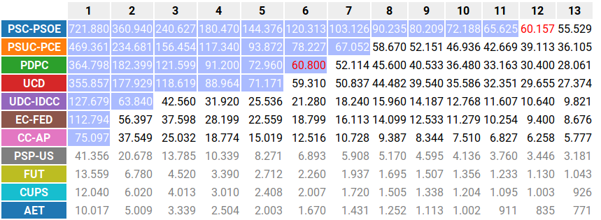

{kind=link}
La Regla de D'Hondt se usa para el reparto de representantes en nuestro sistema electoral. Este artículo la explica de una forma diferente y gráfica, que nos permite dejar de verla como una caja negra, para sacar muchas conclusiones y para descartar muchos mitos.
La clave de todo es, en vez de centrarnos en el método de cálculo, centrarnos en su propósito. El propósito sería encontrar un precio en votos por el que se repartan justo todos los escaños disponibles.
Gráficamente se puede entender donde está el beneficio a los mayoritarios, pero también se puede delimitar el alcance de ese beneficio y saber en qué casos se nota más y en qué casos menos. También permite saber la masa crítica necesaria para que pasen ciertos cambios. Y sobretodo sirve para fundamentar el descarte de muchos mitos y ideas preconcebidas.
Un mal entendimiento de D'Hondt o del sistema electoral es el que nos lleva a pensar que D'Hondt es el muro a derribar para tener un sistema más proporcional, que si bien es cierto que introduce desproporción, el origen de la desproporción actual se puede achacar sobretodo a la división en circunscripciones.
Otro malentendido es el que dice que como D'Hondt beneficia a las candidaturas grandes, si nos juntamos en coaliciones saldremos beneficiados de ello. Entendiendo como funciona D'Hondt se puede observar que esta estrategia no es tan buena como parece.
Objetivo: el precio justo
En la LOREG, y en la mayoría de fuentes, se explica D'Hondt describiendo un aburrido procedimiento para calcularlo:
Para cada candidatura, obtienes sus cocientes dividiendo los votos recibidos por 1, 2, 3, 4... asignas escaño a los cocientes más altos, bla, bla, bla...

Esta descripción es útil para que burócratas e informáticos calculen el reparto sin pensar. ¿Pero para qué se hace todo eso? Es mucho más ilustrador si explicamos D'Hondt por su objetivo:
D'Hondt sirve para encontrar un precio en votos por cada escaño, tal que, a ese precio
- se repartan todos los escaños disponibles
- a ninguna candidatura le sobren votos para ningun escaño más
En la tabla anterior el precio se correspondería con el cociente destacado en rojo con fondo azul, 6.800 votos, el último cociente que ha obtenido escaño. Si divides los votos de cada formación por ese número obtendrás el número de escaños que le tocan y algunos decimales. De hecho, nos vale cualquier precio entre este último cociente y el siguiente cociente que entraría, marcado también en rojo pero con fondo blanco, 60.157.
En vez de usar el método D'Hondt de los cocientes, podríamos llegar al mismo resultado moviendo el precio hasta encontrar un precio que reparta el número justo de escaños. A esta intuición gráfica queríamos llegar:

Todo lo que suene a precios que se fijan solos recuerda mucho a la mano invisible del mercado. Quizás por eso les sonó tan bueno y justo a las democracias liberales del siglo pasado.
En todo caso, parece proporcional, ¿verdad? Ciertamente lo es bastante, aunque no del todo. Si le damos un par de vueltas, entenderemos un poco mejor donde está la desproporción, en qué casos se da y qué papel juega.
Acorralando el precio de D'Hondt
Así pues, el reparto de D'Hondt se basa en ajustar el precio del escaño. Muchas cosas dependen de ese precio final. Es útil, por ejemplo, para conocer cuál es la masa crítica para tener impacto, o para saber si nos ha de preocupar el umbral electoral. Aunque no lo podamos saber de antemano, si que lo podemos acotar y tener una expectativa aproximada de cual será.
El precio máximo posible se da en el improbable caso en que no le sobrara a nadie votos. Todas las candidaturas tienen los votos justos para sus escaños.
Por ejemplo, si tenemos 2.000.000 de votos a candidaturas y 20 escaños a repartir, el precio máximo será 100.000 votos por escaño.
Para que se dé ese precio, todas las candidaturas tendrían que obtener un múltiplo de 100.000 votos. Por ejemplo: 700mil, 600mil, 400mil, 200mil y 100mil. Y les repartiríamos 7, 6, 4, 2 y 1 escaños respectivamente.
Como ves, sería el caso ideal de representación porque habríamos conseguido un parlamento con la misma proporción de opiniones que en la sociedad, ignorando el no-voto.
El precio mínimo sería el caso opuesto, también muy improbable, en que todas las candidaturas, menos la que marca el precio, se quedasen a un solo voto de conseguir el siguiente escaño. Dado el número de votos a candidaturas, los escaños y el número de candidaturas, podemos conocer ese precio mínimo.
Para el caso anterior, el precio mínimo seria 83.333'5. Por ejemplo, si los votos fueran: 583.334, 583.333, 416.667, 250.000 y 166.666, todas las formaciones obtendrían el mismo resultado que antes y todas las formaciones menos una se quedarían a un voto del siguiente escaño.
En la figura puedes ver estos dos escenarios en el simulador de flujos electorales. La zona translúcida son los votos que no han servido para sumar escaño.
Conociendo la participación y el numero de candidaturas, ya tenemos el precio acotado por arriba y por abajo. Intentemos ahora hacer una estimación del precio final.
Si, en media, a las candidaturas les sobra la porción R del siguiente escaño,
el precio final sería exactamente:
Si estimamos bien R, tendremos una buena aproximación del precio final.
Para las candidaturas con representación,
hay la misma probabilidad de que se queden
en un punto cualquiera entre el último escaño y el siguiente.
En media, se quedarán en medio.
Es decir, la esperanza para estas candidaturas es que R = 0'5.
Pero, históricamente, eso solo se da con las formaciones con representación.
Las formaciones extraparlamentarias
no siguen ese patrón sinó que la mayoria están por la parte baja, por debajo del 0'3.
Si para una convocatoria y circunscripción concreta sabemos más o menos el número de candidaturas que se quedarán fuera, y más o menos los votos medios que obtendrán, podemos ajustar la R.
Mi consejo es que uses el simulador de flujos electorales
para ver el comportamiento histórico de tu convocatoria y circunscripción.
El simulador muestra el valor de R así que te puedes hacer una idea.
Eso sí, ojo con los datos históricos, porque la nueva exigencia a los extraparlamentarios de obtener firmas para presentarse, ha cambiado la tendencia. Hay menos extraparlamentarios y concentran un poco más el voto.

Hay una convocatoria en que el factor se dispara: Barcelona en autonómicas. Es por que hay tantos escaños a repartir que el precio de D'Hondt es bajo y el umbral electoral que dice la LOREG del 3% son casi tres escaños. Es la única convocatoria y circunscripción donde pasa algo así.
En resumen, dada la participación, podemos acotar el precio por arriba y por abajo e incluso podríamos estimar un precio final haciendo suposiciones sobre el número de partidos que tendrán representación y el voto medio a los extraparlamentarios.
El origen de la desproporción: los escaños partidos
Hemos comentado que cuando tenemos precio máximo, nos sale una proporción exacta con los votos. Si aplicáramos ese precio a un escenario cualquiera, normalmente no salen escaños enteros. Tendríamos que andar partiendo diputados con la motosierra y eso, como hemos dicho, no es legal en España. Al final, tendríamos candidaturas con votos sobrantes que, si los sumamos, corresponderían a los escaños no repartidos.

La forma más natural (¡y justa!) de repartir esas sobras es la que se llama Regla de Hamilton o de restos mayores. Lo que hace es repartir los escaños sobrantes a las opciones con más restos de votos, que por tanto se habían quedado más cerca de obtener el siguiente escaño. Esto minimiza los votos que estan representados por una opción que no es la que escogieron, aunque siguen habiéndolos. Cada opción como máximo se lleva un escaño extra o ninguno.

D'Hondt reparte los escaños sobrantes de una forma distinta: Va reduciendo el precio hasta que se acaban repartiendo todos los escaños. Si con el precio máximo una opción ya ha obtenido N escaños, al bajar el precio solo puede obtener más. Así que de entrada concluimos que tanto Hamilton como D'Hondt reparten como mínimo los escaños que quedan enteros en un reparto puramente proporcional.
Como la posible desproporción es la que cause el reparto de los escaños sobrantes, delimitemos los escaños sobrantes y tendremos delimitada la desproporción.
¿Sabemos cuantos escaños sobrarán?
Como poco, ninguno, en el caso ideal de escaños justos. Como mucho, a todas las candidaturas les sobraría casi un escaño, menos a una candidatura que tendría lo que les falte a las otras. Serían el número de candidaturas menos una.
En un escenario típico, lo esperado vuelve a ser: la mitad de las candidaturas con opción, más los restos de las extraparlamentarias. Atención, por eso porque ahora estamos hablando de los restos del reparto puramente proporcional, y cuando delimitábamos el precio, hablábamos de los restos de D'Hondt.
¿Quién se lleva los restos?
Ya hemos aproximado lo que vale un escaño. Hemos visto que la desproporción solo puede venir de los escaños de restos, y sabemos aproximadamente cuantos escaños son.
Veamos cómo reparte los restos la regla de D'Hondt:
Al bajar el precio, una opción con más votos sobrantes tiene más probabilidades de llegar al siguiente que otra con los mismos escaños enteros pero menos votos sobrantes. Esto sería igual que Hamilton: Representa un escaño arriba o no, y se lo llevan las opciones con más restos.
La diferencia radica en un pequeño detalle: Si, para repartir todos los escaños, hay que bajar el precio, digamos a un 90%, no solo estamos rebajando el umbral al que tienen que llegar los restos. También liberamos un 10% de votos que usabamos para cada escaño entero que obtuvimos con el precio máximo y que ahora pasarán a formar parte de los restos.
Tanto es así que, por ejemplo, una formación con 9 escaños, y un 10% de rebaja en el precio, llegaría sí o sí al 90% del siguiente escaño, tenga los restos que tenga. Es más, una formación con 18 escaños llegaría al segundo extra tenga los restos que tenga.
Como ves, esta ventaja es proporcional a los escaños enteros que al mismo tiempo es más o menos proporcional a los votos. Pero no deja de ser una desproporción, porque la proporción ya la teníamos más o menos con los escaños enteros y al añadir más de un escaño con seguridad la estamos rompiendo.
Pero el hecho de que sea aproximadamente proporcional tiene un efecto paradójico con las coaliciones. Imaginemos dos formaciones que habrían obtenido 8 y 3 escaños enteros en la repartición proporcional. Por separado D'Hondt les da 8 y 3 veces los votos que se ha tenido que reducir el precio. Juntos obtendrían 11 escaños enteros o, con una probabilidad del 50%, quizas 12 por la suma de los restos. 11 es la suma de la ventaja que ya tenían por separado. Podría ser 12 pero si ya han sumado los restos, los nuevos restos son menos del 50%, así que generalmente el único beneficio de la coalición es la suma de restos que ya sucede con una distribución de Hamilton.
Conclusiones
- D'Hondt reparte como mínimo los escaños enteros igual que hace Hamilton
- La diferencia está en cómo se reparten los escaños sobrantes
- Los escaños sobrantes pueden ser de 0 a al número de candidaturas (menos uno)
- Los escaños sobrantes suelen ser la mitad de las candidaturas con opciones a escaño
- Si hay muchas opciones extraparlamentarias, pueden añadir un escaño sobrante extra
- D'Hondt reparte escaños sobrantes de forma proporcional, generando desproporcionalidad
- Al repartirse de forma proporcional, no beneficia a las coaliciones más allá de la suma de restos que dan medio escaño por candidatura añadida
Apéndice: Cálculos
Precio máximo
Todos los escaños se reparten a precio máximo, sin sobras.
Precio mínimo
A todas las candidaturas menos a una les falta un voto para llegar al siguiente.
Cuando los votos son miles o millones se puede aproximar más fácil por:
Precio exacto
Donde:
Es decir, la porción sobrante del escaño media entre las candidaturas.
TL;DR (Demasiado Largo; No Leí)
Aunque el interés de este artículo sea la nueva perspectiva, y cómo nos permite llegar a conclusiones, es posible que seas una persona ocupada, y el artículo, con gráficos y animaciones, no deja de ser largo.
Así que para tu conveniencia, resumo aquí las conclusiones a las que he podido llegar yo:
- D'Hondt beneficia a los mayoritarios, pero otros elementos de la ley electoral como la división en circunscripciones tienen un impacto mucho mayor en ese sentido.
- D'Hondt acaba fijando un precio para el escaño:
- Saber ese precio, nos da una idea de la masa crítica para tener impacto
- Dada la participación, se puede acotar por arriba y por abajo
- Dada la participación, podemos predecir un valor aproximado
- D'Hondt respeta el reparto de escaños enteros que haría un reparto puramente proporcional
- La distorsión, pues, la provoca el reparto de los escaños que no se repartirían enteros, los escaños partidos
- Siempre serán menos escaños que el número de candidaturas
- Tienden a ser poco menos que la mitad del número de candidaturas con opción a representación
- Se reparten más o menos proporcionalmente a los escaños enteros de cada candidatura
- Por ejemplo: para recibir 3 extras, hay de tener aproximadamente 3 veces los escaños enteros de quien recibe 1 extra
- Por eso solo hay grandes beneficios por D'Hondt cuando hay grandes desigualdades
- Y como hay pocos extras a repartir, los beneficios suelen limitarse a 2, en las grandes circunscripciones, y, históricamente como mucho a 4
- Aunque parezca paradójico,
D'Hondt no da ninguna ventaja a las coaliciones
que no les de ya por separado.
- El beneficio real de coaligarse es la suma de votos sobrantes, que se da en cualquier otro método y esta limitada a 0 o 1 escaños por circunscripción.
En este mundo, no hay tiempo para contrastar, leer o reflexionar. Pero recuerda: Los mitos se propagan porque la gente en general se cree lo que lee en Internet si está en un formato guai y más o menos le cuadra. Te puedes quedar con estas conclusiones o puedes seguir leyendo y entender porqué como de grises son los grises, y sacar las tuyas propias.